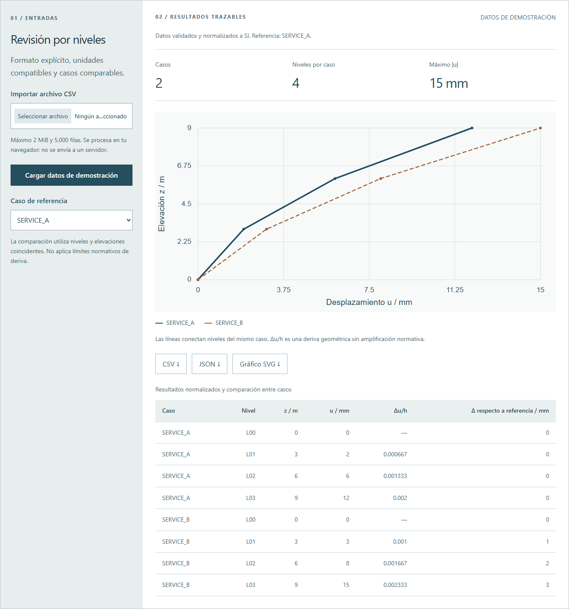

De un CSV a una revisión por niveles
Desplazamientos, diferencias entre casos y control de unidades.
Carga resultados exportados en el formato documentado, revisa perfiles por nivel y descarga datos normalizados. Los datos iniciales son sintéticos y no proceden de un proyecto real.
Revisión por niveles
Formato explícito, unidades compatibles y casos comparables.
Máximo 2 MiB y 5.000 filas. Se procesa en tu navegador; no se envía a un servidor.
La comparación utiliza niveles y elevaciones coincidentes. No aplica límites normativos de deriva.
Qué se calcula.
Cómo se comprueba.
La interfaz ejecuta una implementación JavaScript ligera. Los módulos Python descargables procesan los mismos ejemplos; pruebas de paridad comparan ambas salidas. No hay conexión activa con ETABS o SAP2000.
Para ejecutar el módulo, conserva _common.py en el mismo directorio y descarga también el CSV de ejemplo. El repositorio incluye ambos módulos, ejemplos y pruebas. _common.py ↓
Formato de intercambio
case,level,elevation,displacement,elevation_unit,displacement_unitUnidades de longitud aceptadas: m, cm y mm. Cada par caso–nivel debe ser único. Todos los casos deben compartir niveles y elevaciones. El primer nivel conserva desplazamiento absoluto; su deriva entre niveles se deja sin valor porque no se presupone un apoyo inferior.
hᵢ = zᵢ − zᵢ₋₁
driftᵢ = Δuᵢ / hᵢ
La deriva geométrica exportada no incluye amplificaciones reglamentarias ni una comprobación de cumplimiento. Revisa el tipo de desplazamiento exportado, su referencia y el significado de cada caso antes de usar resultados reales.
Ejecutar Python y revisar pruebas
cd python
python process_results.py examples/storey-results.csv --json results.json --csv results.csv
python -m unittest discover -s tests -vDocumentación, validaciones y limitaciones ↗
Ejemplo didáctico de 2026, independiente de trabajos para empleadores y sin validación de diseño normativo.
Ver captura de la interfaz con el ejemplo inicial
